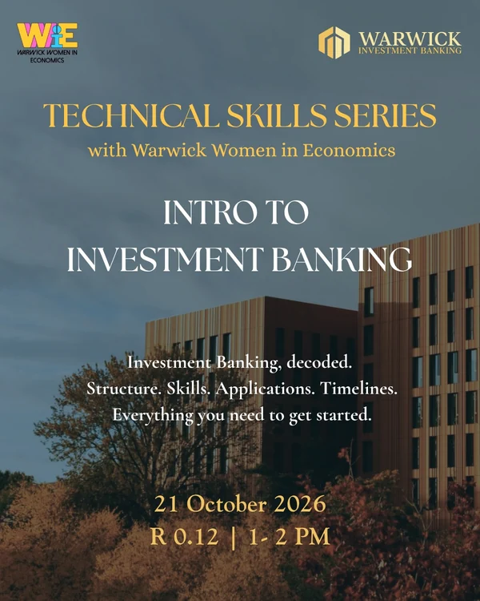
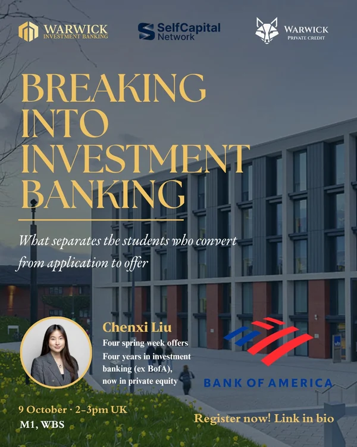
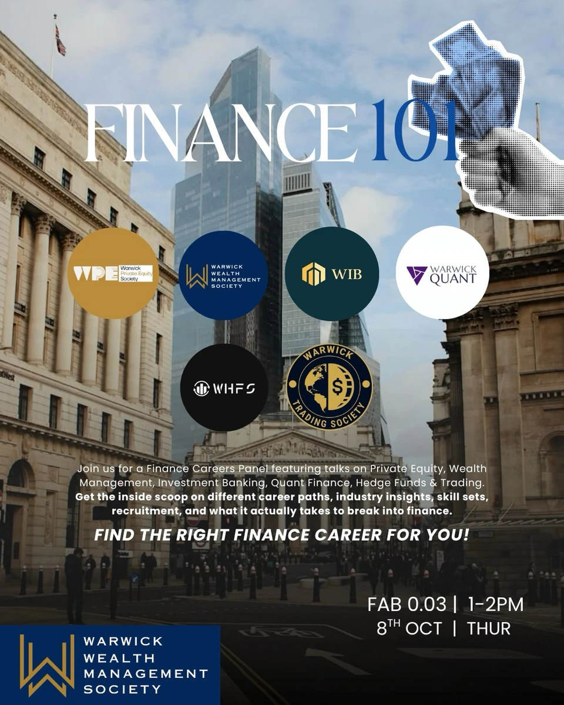

Past event ·
Intro to Investment Banking
The first session in the Technical Skills Series, with Warwick Women in Economics.
- When
- 13:00–14:00
- Where
- R0.12
Warwick Investment Banking
Speaker sessions and technical workshops at Warwick.
Latest announcements on Instagram
Past event ·
The first session in the Technical Skills Series, with Warwick Women in Economics.

Past event ·
A session with Chenxi Liu on technical interviews, CVs and applications.

Past event ·
A careers panel with six Warwick finance societies, including WIB.
New dates are announced on Instagram and in the WhatsApp group.